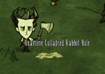

Rabbits are small animals commonly found in Grasslands, Forests, and Savannas. They provide a steady and reliable source of food, as they drop morsels when killed. Rabbits are passive creatures and will run towards their holes when the character gets too close. They are considered innocent creatures, and killing one adds 1 point to the player's naughtiness level, which can cause Krampus to appear.
In Winter, Rabbits' coats will turn white, much like Rabbits in real life.
Rabbits take one blast from the Ice Staff to be frozen and one Sleep Dart to be put under. With normal damage modifiers, Rabbits instantly die from any hit from a Spear or any better weapon.
The only tools that will do the same are the Axe and Pickaxe (and their golden counterparts), and the Pick/Axe.
Rabbits can also spawn by prototyping an item on the Prestihatitator.
Beardlings
A Rabbit will turn into a Beardling when a character's Sanity drops below 40% (48 for Willow and Wigfrid, 40 to 120 for WX-78, 100 for Wickerbottom, 60 for Wes, and 80 for all other characters). All Rabbits, including those already captured and stored (in the inventory or a container) will become Beardlings. They behave just like normal Rabbits but are covered with black Beard Hair. They can be killed to acquire Beard Hair, Monster Meat, or Nightmare Fuel, or cooked over a fire to get Cooked Monster Meat. Beardlings do not drop morsels. Killing Beardlings is one of the easiest ways to get Beard Hair while not playing as Wilson. It is also arguably the best way to farm Nightmare Fuel, since both items can be obtained from killed Beardlings in relative safety.
Just like Rabbits, Beardlings are considered innocent creatures, and killing one adds 1 point to the player's naughtiness level.
Like many other monsters, Beardlings have an insanity aura and will lower the player's sanity level when the player is in close proximity to a Beardling.
Hunting
One of the cheapest method in terms of prerequisite resources:
A Trap can be placed directly above a Rabbit hole. The Rabbit will be trapped as soon as it emerges. This method is practical when it is planned to check Traps regularly, such as near a base camp.
A good way to hunt Rabbits without raising naughtiness is to put a carrot or berries on the ground and surround it with Tooth Traps.
Another alternative is to drop a vegetable on the ground and place a Trap in between the Rabbit and the vegetable (with some distance away from vegetable). Rabbits will always move in a straight line toward any vegetable dropped on ground. The Trap will activate as soon as the Rabbit walks under it. Therefore capturing the Rabbit before it can eat the vegetable. Placing them too close will make the bait disappear after the Rabbit is captured.
Place a Trap and chase a Rabbit into it. There is a slight delay before Traps activate, so the best method is to position yourself over the Rabbit hole with the Rabbit between the player and and their Trap. Spooking a Rabbit will make him run toward his hole at a slightly larger radius than he runs from the player, so he will keep running toward and away from you as long as you stay between him and his hole. Abuse this to get him to stop under the Trap.
Since Rabbits are scared of Chester, another method is also available. First, Chester needs to be stationed over the Rabbit hole and carry the Eye Bone inside so that he would stay still. Then the player chases the Rabbit so that it runs towards the hole. When it gets close enough to Chester, it will get scared and try to run in the opposite direction, and that's when the player gets to hit the Rabbit with a melee weapon.
It is still possible to kill Rabbits without trapping or baiting, just simply cutting one off. In previous updates, this was the main way of killing rabbits. Now, they run away, but it can still be done with a couple of tries. Using a Walking Cane will increase the player's speed.
If all else fails, it is of course possible to just bait the trap with a vegetable to lure a rabbit in; however, the bait would be consumed on a successful catch.
When playing as Maxwell, it is be possible to kill Rabbits with Shadow Puppets, since they can outrun the Rabbits.
Rabbits caught in Traps become live inventory items. While they do not stack, they also do not perish and thus can be safely stored for long periods of time. Captured Rabbits can be killed in inventory by pressing RMB to get morsels, or be cooked straight into cooked morsels over a fire. Even when captured, rabbits will turn into Beardlings when the player character's sanity level drops low enough.
Reign of Giants
In the Reign of Giants DLC there will be an alternative method of getting Rabbits, by destroying Tumbleweed (with 0.1% chance). Caught Rabbits, as of A Feet of Strength, also eventually starve to death.
Rabbit Holes collapse after the first Rain in Spring and tend to stay closed, becoming a Collapsed Rabbit Hole.
The Catcoon will occasionally vomit a live Rabbit. This Rabbit will be frozen in place for a short time, similar to if a player releases a Rabbit, and is thus easily killed with a melee weapon, if the aforementioned Catcoon doesn't kill it first.
Once caught, a Rabbit's link to their hole is severed. If released, the Rabbit will still attempt to flee from the player, but will not be able to retreat to a hole.
The animal's original name was "Jackalope". A jackalope is a joke-mythical creature invented by taxidermists which consists of an ordinary Rabbit or hare with small antlers growing out of its head.
Upon examining a Rabbit in the inventory, Wilson asks, "Do you like science?", referring to the use of animals in experiments.
When a Rabbit Hole is examined by Wendy, she says "I'm too big to fit down there", possibly referring to Alice's Adventures in Wonderland by Lewis Carroll.
When Wilson examines the Rabbit hole he says "That must lead to the kingdom of the bunnymen..." This may have provided the inspiration for the bunnymen found in caves.
In the Reign of Giants DLC, Rabbits will appear in their winter variants during Autumn. It is unknown if this is implemented or if it is simply a bug.


")
")
")
{kind=link}
{kind=link}
{kind=link}
{kind=link}
{kind=link}
{kind=link}
{kind=link}
{kind=link}
{kind=link}
{kind=link}